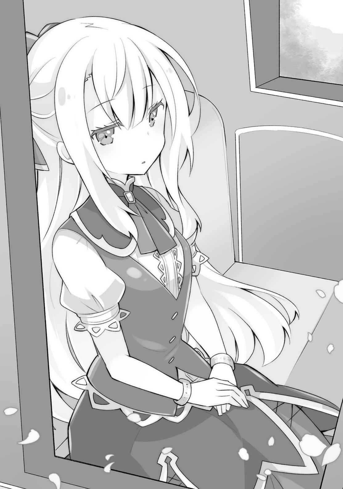

幕間 ルキア・ハスクバーナ ②
ジリジリと二年間は過ぎていった。
十二歳で祝福を授かった子どもは、神官見習いとして例外なく修道院に入れられる。
共同生活をしながら、祝福者同士の結束を固くする為と、ファーレー教の教義を叩きこむ為だ。そして、そこで祝福者はそうでないものより一段上の存在だと吹き込まれる。
神の力を代行するもの。
それは同時に、神に代わってこの世界を治めるものという意味でもあったらしい。一段上から、この世界をコントロールし、秩序を守る役割を担う存在、それがファーレー教であり祝福者であるのだと。
成長の過程で偶然授かった力でしかないくせに、驚くほど傲慢な考え方だ。
しかし、ある意味これは仕方がないことなのだ。
力のあるものが権力を握る。世界とはそういうもので、だからこそ魔法使いが貴族として国を治めているのだという。兄がそう言っていた。
逆に、だからこそ、祝福者になれたというだけで今後食いっぱぐれることがない。それは、とても幸運なことなのだと。兄はしみじみとそう言っていたが、なるほど私たちは二人共、元々捨て子なのだ。父に拾われたことも幸運なら、祝福者になれたのも、それ自体は幸運であると言えるのかもしれない。私たちを捨てた人間は、私たちが祝福者になるなどとは、夢にも思わなかったはずだ。捨てた理由などはわからないが、単純に口減らしの為だったのだろうから。本当の親も、将来、子どもが祝福者になって、裕福な暮らしができると確約されていたならば、私たちを捨てたりはしなかったのだろう。
ただ、兄の記憶によると、私たちは兄妹であるかどうかすらわからないらしい。確かに、成長するにつれて、顔が全く似ていないのが顕著になったし、そもそも髪の色だって違う。だから、おそらく本当に、血の繋がりはないのだ。
ならば、私が兄と出会うことができたのは、本当の親が、私たちを捨てたからということになる。それはそれで、今となっては逆に感謝したいくらい……などと言ったら、怒られてしまうだろうか。だが、それは私の偽らざる本音だ。
兄とは血の繋がりがない……。結婚だって問題なくできる……。
私が……私が、はやく助け出さなければ。
「あの……ルキア様、大丈夫ですか……？」
「えっ、ええ……。大丈夫よ」
声を掛けられ思案に沈んでいた意識を浮上させる。
私は今、聖都にある神殿の総本山『聖アーサー大聖堂』へ向かっているところだ。
二年間の修道院生活を経て、もしかしたら故郷に戻れるかもしれないという希望は儚く打ち砕かれた。私に下された配属先はファーレー教総本山ミルウォーク。しかも、その大聖堂。ラベルダ王国とは海を隔てているとはいえ隣国同士なのだが、かといって、そう簡単に行き来できる距離ではない。
新米祝福者は親元を離れて、二年間の修道院生活をする。
父も悲しみつつも二年後の再会を楽しみにしてくれていたのだが、まさか間髪入れずにミルウォーク勤務になるとは……。
いや……予想はしていた。普通、祝福者は研修後に地元の神殿で働くことになるのが普通なのだが、珍しい祝福を授かった場合はその限りではないのだから。
しかも、私の場合は、実家に帰ることは許されず、護衛を付けられてミルウォークへ直行である。抗議はしてみたが、当然のように受け入れられなかった。
父も、兄と私、二人ともいなくなるとはさすがに思っていなかっただろう。今頃、寂しい想いをしているに違いない。
行方不明の兄を見つけたいという想いと、私だけでも父の側に付いていてあげたいという想い。どちらも本当のことだ。そして、私の『大切なもの』の中に、ファーレー教のことは含まれていない。……正直に言ってしまえば、どうでもいいのだ。

本当ならば私も、修道院で一緒に過ごしたあの娘たちと同じように神の教えに傾倒し、立派な神の使途になっていたのかもしれないが、私はもうとっくにどうしようもなく歪んでしまっている。
私にとって大切なものは、家族だけだ。
私が護りたいものは、兄……カイ・ハスクバーナ、たった一人だけなのだ。
「私、ルキア様の体調管理を命じられてるんですから、小さいことでもなんでも仰って下さいね。もし、ルキア様になにかあったら、この世界の大損失ですから」
「大袈裟ね、ちょっと考えごとをしていただけよ」
「ルキア様は昔から、すぐ自分の中に入り込んじゃうタイプだよねー」
馬車の隣に座る、私のお付きとして同行している二人の祝福者は、二人とも私の同期で修道院では部屋も同じだった。
名前はクレアとイブといい、それぞれ「癒しの神」と「盾の神」の祝福者である。
「癒し」と「盾」を側に付けるのは王族や軍の将軍などを除けば、神殿でも司教クラス以上だけである。クレアとイブが私の同室だったのは、おそらく偶然ではない。
神殿は初めから、私を要人として扱うことを決めていたのだろう。
彼女たちが、何度改めるように求めても「様」を付けて呼ぶのは、上から何かを言い含められているからに違いない。『真実の神』の能力を使えば、すぐにわかることだが純朴に教えを信じている彼女たちに力を使うことははばかられた。
「あー、ミルウォークに付いたらルキア様ともお別れかー」
「無事に送り届けるのが私たちの最後のお役目ですからね。……本当は、私たちもいっしょにいられればよかったのですけど」
今、この馬車の周りには二十名の神聖騎士が私の護衛の為に同行している。
状況次第では、逃げるという選択肢もあった。ミルウォークでの役目がどういうものかは聞かされていないが、もう外へ逃げるのは不可能に近いだろう。
力を無制限に使えば可能かもしれないが、私の能力は能力者と相性が悪い。神の力の大原則「能力の効果は重複されない」があるからだ。
相手の時を止めて無力化することができる私とて、盾の神の力は突破できないし、発光状態の光の神の祝福者にすら勝てはしない。もう一つの力、デティーススの能力は、逆に強すぎておいそれと使えない。それを使うだけの覚悟が私にはまだないのだ。
常に『時の神』の能力を自分自身に使い、時の流れをほんの少しだけ遅くしている私には、祝福の能力の一切が効かないが、結局はそれだけのこと。
私自身はただの非力な少女でしかない。
（……でも、ミルウォークなら兄の消息を知るものが必ずいるはず）
私の目的は兄を探すことだ。どこかの島に連れて行かれたらしいという情報だけは、あの日に上級審問官から入手したが、その後は何の情報もない。
兄の祝福はとても珍しいものだったから、あるいは秘密裡にミルウォークに連れて来られている可能性もある。
さすがに、大聖堂で再会などという物語を夢見ているわけではないが……。
「それにしても、さすがね。こんなに巡礼者がいるなんて」
馬車の外には、白い服を身にまとった老若男女の群れが私たちと同じ場所を目指し歩いている。これだけの数の巡礼者を見るのは初めてだ。
「ミルウォークは世界一巡礼者がやってくる街だからねー」
「私もちっさい頃に来たことありますよ！ 名物のおダンゴなんか食べて楽しかったなぁ。あ、帰る前に食べていこ」
「じゃあクレア案内してよ。イブも食べてみたい」
「来年だったら、もっと良かったなぁ。千年祭ってのがあるってシスター言ってたでしょ？ なにをするお祭りなのかは知らないけど」
「さすがに来年まではいられないもんなー」
クレアとイブが私を送った後の話を始める。彼女たちはこの仕事が終わったら長期の休暇が与えられる。その後は地元に帰って神官をやるのが決まっているのだという。
正直に言えば、羨ましい。でもダメだ。
私が兄を見つけなければ。そうしなければ、私は一生後悔を続けることになるだろう。
ミルウォークには必ず特級審問官がいるはずだ。特級審問官は神出鬼没で、どの場所にいるのかわからない。私が知ることは、ある特殊な神の祝福者だけが特級審問官になれるということ。そして、特級審問官は大司教に次ぐ権能を持つということ。その二つだけだ。
そして、私はたとえ相手が誰だろうが、能力を使うことを躊躇したりはしない。
必ず兄の情報を知る者を見つけ出し、助け出してみせる。
◇◆◆◆◇
「これがミルウォーク……。なんて広い……これが全部神殿だっていうの」
「いえルキア様、さすがに全部ではないですよ。巡礼者向けの宿舎も多いですし、美術館や図書館や博物館、礼拝堂や施術院、あと事務棟なんかもありますから」
「あ、そうなのね。古くて立派な建物ばかりだから……」
私たちは、長い旅を終えてファーレー教の総本山ミルウォークに到達していた。
ラベルダ王国はそれなりに大きい国だったはずだが、ミルウォークはさすがは神殿の本拠地というべきか、ラベルダとは比べ物にならないほど都会で、正直圧倒されてしまう。
兄の記憶の中にあった『大都会』とは方向性が違うが、人間の多さは似たようなものかもしれない。
ミルウォークの中心には、何万人でも入れそうな石畳の広場があり、その奥に神殿が誇る最大の聖堂『聖アーサー大聖堂』がある。
長旅で汚れた白い巡礼服を身にまとった人々が、列をなして大聖堂へと吸い込まれていく。ちなみに、ミルウォークには二つの大聖堂があるのは有名であるが、もう一つの『聖ペリエ大聖堂』は比較的新しく、確か今から七〇〇年程度前のものであったはずだ。『聖アーサー大聖堂』はそれこそ千年以上前に建てられたものだったはず。ここから見る限りでは、とてもそんなに古い建物には見えないほど、美しく、そして巨大だ。
「じゃあ、ここまでね。二人共ありがとう」
寂しいけれど、クレアとイブとはここでお別れだ。私をミルウォークへ届けるところまでが、二人の仕事なのだから。
そして、ここで別れてしまえば、もしかすると一生会うことはないかもしれない。二人の故郷は知っているけれど、そう簡単に行き来できる距離ではないからだ。
私が兄を探す過程で神殿を敵に回すことがあれば、なおさら会うことは難しくなるだろう。そして……そうなる可能性は高い。
「ルキア様……なにか悩みがあるんですか……？」
「えっ、あっ、ごめんなさい。大丈夫。少し考え事してて……」
「えー、別れの場面だってのに、それなくない？」
怒られてしまった。私はどうもこういうやつなのだ。自分本位というか、あまり他人のことが考えられない。父親と兄に甘やかされて育ったからか、わがままな性分なのだろう。
「いえ、ルキア様はこのミルウォーク入りが決まってから、思案に沈むことが多くなっていました。なにか理由があるのでは？ 私たちには話せないこと？」
「悩みなら、なんでも話してくれればいいんだよー？ 友達なんだからさ」
クレアとイブが心配してくれるのは嬉しい。
実際、私のこれはこれ以上ないくらいに「悩み」らしい悩みだろう。
「いえ……ちょっと家族と会えないのが寂しいと思っていただけよ」
「ルキア様はご家族想いでいらっしゃるんですね……」
「あー、お父さんお一人だって言ってたもんねー」
二人には兄のことは話していない。おそらく、私の祝福のことも知らないだろう。
たとえ祝福者同士であっても、祝福を教えるのはもちろん聖印も見せないようにするよう、決められていたからだ。
それに、イデアの祝福を持っているというのは、友達にはあまり知られたくはないというのもあった。イデアの祝福者は友達ができないという修道院での噂を信じたわけではないが、仮に私だったとしてもイデアの祝福者とは仲良くしたくはないかもしれない。
誰にだって知られたくない秘密の三つや四つあるものなのだから。
「あなたたちとお別れするのも寂しいわ……」
「うん！ ルキア様も元気でね！ 私、きっと会いに来るから！」
「イブも。巡礼だって言えば毎年でも来れそう～」
二人と軽いハグをして別れを惜しむが、彼女たちには釘を刺しておかなければならない。
「いえ、私はここに勤めることにならないと思う。おそらく、ここで大司教様か、教皇様から使命を直接賜る……その為に呼び出されたのに違いないわ」
「じゃ、じゃあもう会えないんですか？」
クレアが泣きそうな顔をするが、さすがに「そうだ」と答えるわけにもいかない。
予定では、一年以内に兄の居場所を知る者を見つけ出し、情報を得て、探しに出るつもりなのだ。彼女たちが私に会いに来る頃には、私はこの場所にいないだろう。
もちろん、本当にミルウォーク以外の場所でのお勤めを言い渡される可能性もゼロではないが……まあ、そうならないことを願おう。
「いえ……私から会いに行くわ。あなたたちの故郷は知っているもの」
だから、結局こう言うしかないのだ。
──それが、実際には果たされることのない約束だったとしても。